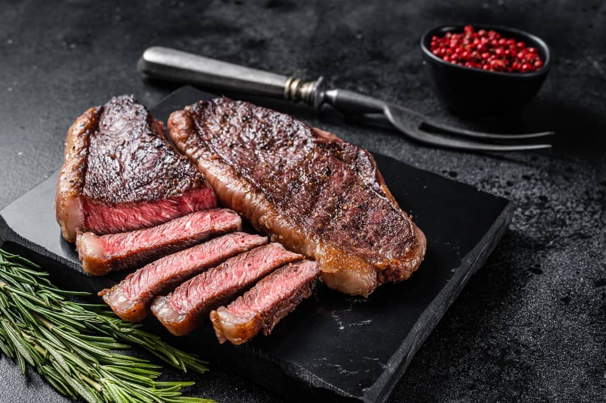

Kelci's Steak Recipe

Description
Hello, my name is Kelci Jenkins. I'm the best chef in the world when it comes to cooking steak. I can make a mean
steak just watch and see, but today I share to you my recipe to make the best steak you've ever cooked in your
entire life!
Ingredients
- Ribeye or any cut of your choosing
- Salt
- Pepper
- Garlic
- Butter
- Rosemary
Steps
- Take your steak and pat it dry on both sides with a clean paper towel to remove any wetness to ensure the
seasoning sticks.
- Once the steak has been pat dry, add salt and pepper on both sides. A steak does not need to be seasoning to
the gods as less is better!
- On a high heat, add your steak into the pan on its letting the crust develop a sear!
- Once you feel it is ready, put the steak face first and let cook for 5 minutes or depending on whatever temp
you want you can eyeball it.
- Flip it so it can cook evenly.
- Once you think the steak is cooked evenly on both sides, take your butter add it onto the pan, crush your
garlic and add it, and add rosemary. Take a spoon and add the golden buttery liquid on top of your steak
- Continue basing on high heat til your mouth starts to water. Take your steak off the stove and let it rest.
- After its done resting cut into that bad boy and take a bite out of the best steak you have ever cooked in
your life and enjoy as the flavors coat your tongue!